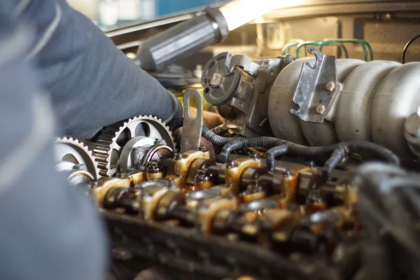

phone:+254 721721735 email:info@3brothersAutospare.com location: RiverRoad Nairobi CBD
Welcome
Let's turn the situation into a solution.

About Us
3Brothers listens to the uniqueness of your situation to turn it into a solution.
The process is a continous relationship since 3Brothers get feedback about the solution and evolving issues as you continue to use the solution to better it and even market it for others to solve their problems.
What we do
We listen to help know what is the best solution to your situation. Is it service or newspare part?
How we do it
Listening
We listen and engage where need be to the situation to enable drawing a conclustion which direction of action will be taken in relation to what you know, what is revealed and current to future situation in relation to what issue.
Design
In this second stage, we put ink to paper and clearly create a system that can be implemented to the satisfaction of our customers
Build
In this final stage, the solution is brought to life. We build and implement the ideas discussed and confirmed during the concept and design stages
Relationship
This is the continous fellow-up communication to know the changes experienced on use of the solutions and implementation of any new developments on the product.
Products/Services We offer:
- Mechanical Spares
- Electrical Spares
- Supplies and Delivery of these spares parts
Past Clients
A. Corporate/Parastatals
- Ministry of Houseing
- KenGen
- Ministry of Education
Readmore
B. Private Businesses
- AutoPorts Freight: Reefer units power supply
- Kone Kenya: AVS for lifts
- Kenrus:AVS for lifts
Readmore
C. Individuals
- Mr. Paul Peter Omondi
- Mr. N. George Ndegwa
- Mr. & Mrs Kiuna
Readmore